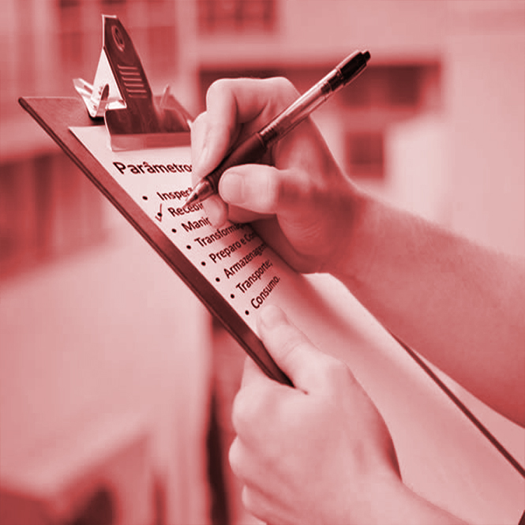

O Instituto SENAI de Tecnologia de Alimentos e Bebidas (ISTA&B), localizado no CIT SENAI FIEMG, em Belo Horizonte, realizou, nos dias 20 e 21/08, o II Curso de Aperfeiçoamento de Programas de Autocontrole na Indústria de Produtos de Origem Animal. A capacitação foi direcionada para profissionais que atuam em estabelecimentos sob fiscalização do Serviço de Inspeção Federal (SIF) do Ministério da Agricultura, Pecuária e Abastecimento (MAPA). O SENAI-MG, com o objetivo de capacitar os colaboradores de empresa de produtos alimentícios de origem animal, promove o curso de aperfeiçoamento em PAC. Uma das exigências legais proposta pelo MAPA para garantir a qualidade de alimentos de origem animal é a implantação dos Programas de Autocontrole pelas indústrias. O programa de autocontrole constitui atualmente a principal ferramenta da agroindústria no controle dos processos de fabricação, visando à garantia da qualidade dos alimentos produzidos. Estiveram presentes 25 representantes do segmento de abatedouros frigoríficos de pescado, aves, suínos, bovinos e a indústria do leite e do mel. Foram apresentados e discutidos assuntos teóricos e práticos dos Programas de Autocontrole do MAPA, de acordo com o Decreto 9.013/2017 (RIISPOA) e Norma Interna 1/2017. O ISTA&B está com vagas abertas para turma de Setembro (10 e 11/09) e restam poucas vagas. Aproveite e inscreva-se já!

O objetivo do SENAI é a formar cidadãos qualificados para atuar de maneira crítica, autônoma, consciente e participativa, tanto no trabalho quanto na vida cotidiana.